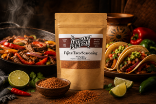

Handcrafted
Made in small batches with attention to balance, aroma, and practical use in real meals.
About The Brand
Artisan's Finest is a small-batch Virginia brand focused on extracts, seasonings, rubs, and blends that make everyday cooking feel more personal.

The Approach
The site is written to leave room for Chris's exact story, sourcing details, and production notes. For now, it positions Artisan's Finest as a thoughtful food brand for local customers, gift buyers, and people who like bold flavor without a mass-market feel.
As more details become available, this page can add photos of Chris, market appearances, kitchen process, ingredient notes, and wholesale information.
Made in small batches with attention to balance, aroma, and practical use in real meals.
Bundles and extracts are presented for hosts, holidays, market shoppers, and culinary gifts.
Blends are easy to use across grilled foods, vegetables, seafood, barbecue, baking, and pantry staples.

Next Step
This page is set up so the story can grow naturally: where the business started, what inspired the blends, how products are made, and where customers can buy them.
Get In Touch